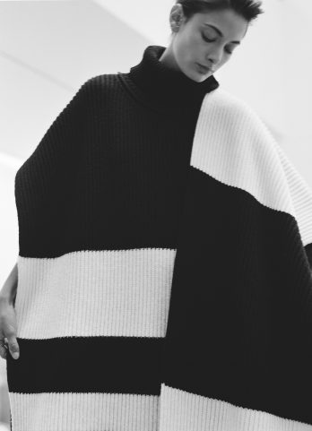

-
FASHION
TRAVEL
INDIA
JAIPUR
Permanent Collection
An autumn style edit, presented at Kettle’s Yard.
-

FASHION
Natural Indigo
Attending the launch of Nila House, a gallery, retail space and design platform in Jaipur, Rajasthan, supporting traditional Indian textiles and natural dyeing.
-
FASHION
The Row, London
The Row’s new store in Mayfair, London, where the brand’s collections are displayed alongside select pieces of contemporary art and iconic mid-century design.
-
FASHION
PARTNERSHIP
Moorland
Exploring Connolly’s Autumn Winter 2019 Collection at Raby Castle in County Durham, England, and through the moorland of the Durham Dales.
-
PARTNERSHIP
Architectural Vision
A drive from East to West Los Angeles with Oliver Peoples, passing some of the city’s most architecturally significant buildings, and in appreciation of the surrounding natural landscapes.
-
A Study of Movements
An essay considering astrology.
-
PARTNERSHIP
Structural Opulence
Exploring the Levi’s Made & Crafted AW 2019 collection, set against a Brutalist architectural backdrop in London.
-
PARTNERSHIP
Laws of the Universe
A visit to Tokyo for Hermés Women’s Universe, where we meet with Bali Barret, its enigmatic creative director.
-
Thalassotherapy
Exploring skincare, sustainability, and the natural bounty of the sea, with Dom Bridges of Haeckels.
-
PARTNERSHIP
Travel in Sound
A train journey with Master & Dynamic through New York’s Lower Hudson Valley, from Rhinecliff to Grand Central Terminal.
-
FASHION
Ornament
We explore Connolly’s Spring Summer 2019 Collection, in the elaborate halls of Leighton House, London; the former home of Victorian artist Frederic, Lord Leighton.
-
FASHION
Quiet Reflection
A style edit of quiet tones and introspective still lives.
-

FASHION
Silver Service
A seasonal style edit of muted tones, interspersed with the bright silver of a necklace, ring, and curving spoon.
-
Draped
A series of still life photographs, inspired by the distinctive mood and shadows of 17th century Dutch Masters paintings.
-
FASHION
PARTNERSHIP
Another Landscape
Exploring the Western Isles of Scotland with Connolly. Their AW 2018 collection was inspired by the stark, natural landscape of the isles, and much of its cashmere and wool are spun and knitted in Scotland.
-

BEAUTY
PARTNERSHIP
Parco Palladiano
The creation of Bottega Veneta’s perfume range – Parco Palladiano – made in their atelier in a restored classical villa in Montebello Vicentino, Veneto, by perfumer Aurelien Guichard.
-
FASHION
Sun-Doused
A style edit, among the rondavels of Gaborone, Botswana.
-
FASHION
ACCESSORIES
All Blues
We visit the Stockholm atelier of All Blues, a jewellery brand that create pieces from ethically and locally sourced materials, for men and women.
-
PARTNERSHIP
A Good Day
We meet with the co-founders of Melbourne-based skincare and vitamin brand BEAR.
-
PARTNERSHIP
Indigo Spring
We explore Levi’s Made & Crafted SS18 collection with Danielle Copperman, a model, writer and author of Well-Being.